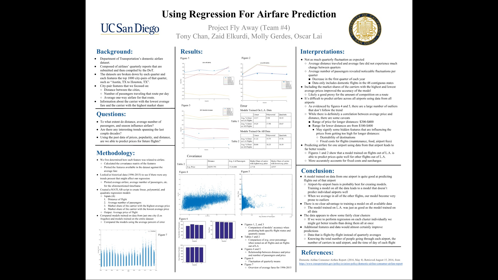

Analyzing Air Fare
This was a final group project for my COGS109 class on data analysis. The purpose of this project was to find a set of data and analyze it. The data was derived from Department of Transportation’s domestic airfare dataset. It is composed of every airlines’ quarterly report within the US, except for within Hawaii and Alaska. We focused on the top 1000 city pairs of 2015 since that dataset was the most recent. With this, we formulated our original question of interest: Using the past data of prices, distance, and popularity, are we able to predict prices for future flights? We are trying to predict future trends using past data, so we all decided that linear regression would be a good model.

Our first step was to find out which features actually correlated with price so we calculated the covariance of many different features within the dataset against the average price to see which one had the highest covariance. The features with the most covariance came out to be distance, number of passengers, market share of carrier with highest price, and market share of carrier with the lowest price. At first, our model did terrible because we ran the regression on all of the flights, but I came to the realization that there could be many outliers affecting the prices in different states. After coming to a consensus, we chose to model the flights from a specific city to another city. The conclusion results were quite interesting. Quarterly season actually doesn’t affect the prices much and most domestic flights within the US usually ranged from $200-$400 over the past decade. We found it odd that the as the distance of flights got longer, the fare would cap at the maximum price of around $400, albeit the minimum fare price for longer distances did increase. We also came to the conclusion that simply modeling on all of the data leads to too many outliers, and that modeling from city to city is the best alternative, since outlying flights from different states/cities would be eliminated.

Some images of me presenting the project during our final presentations.